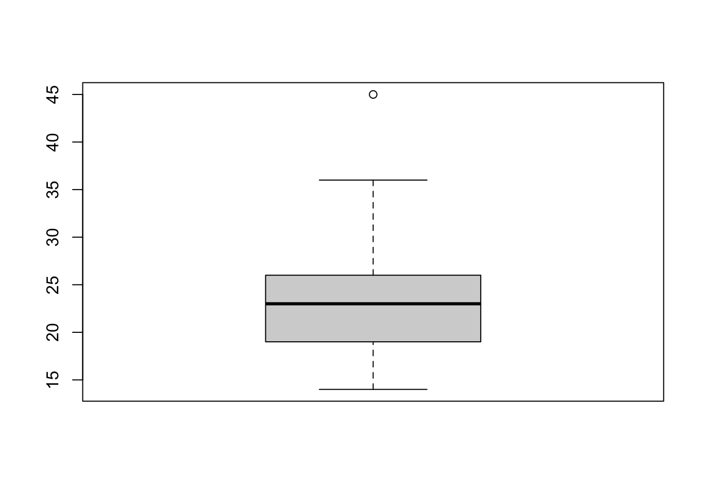
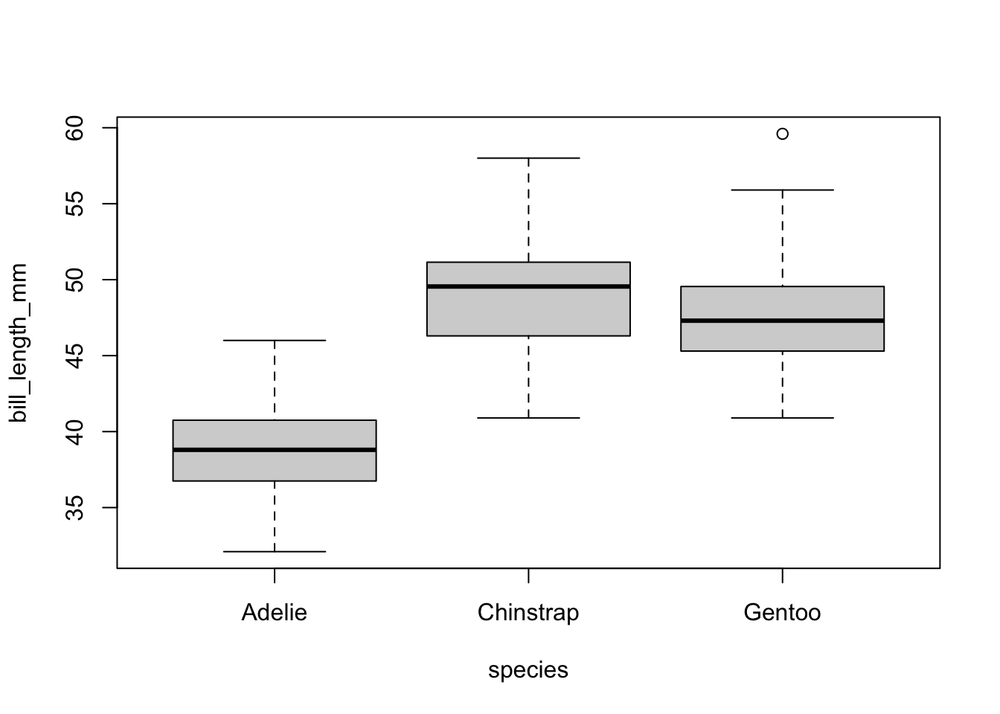
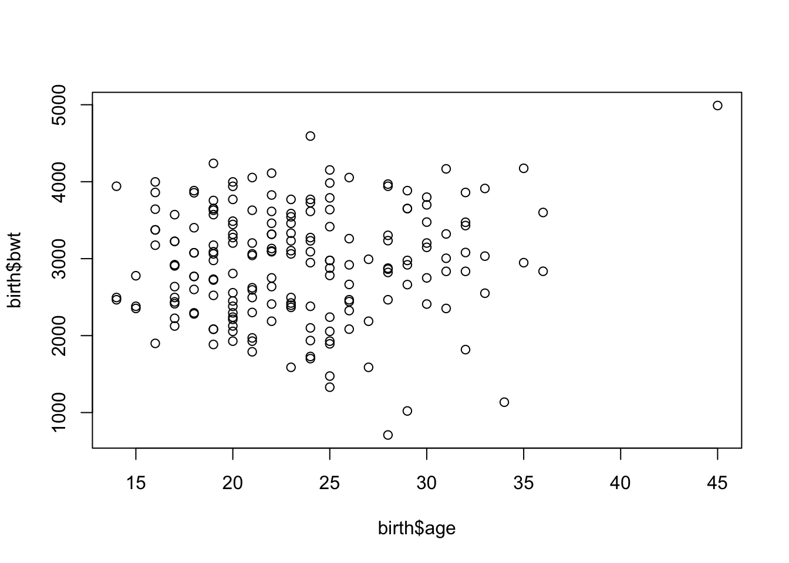
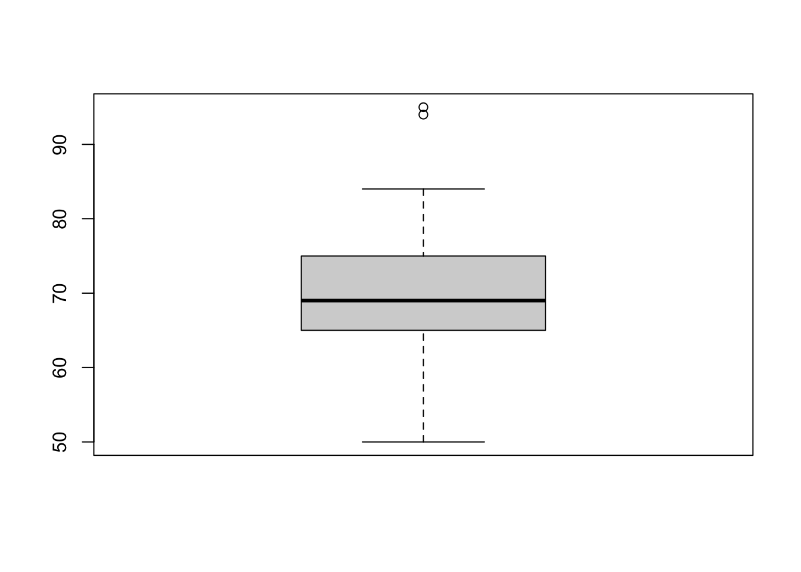
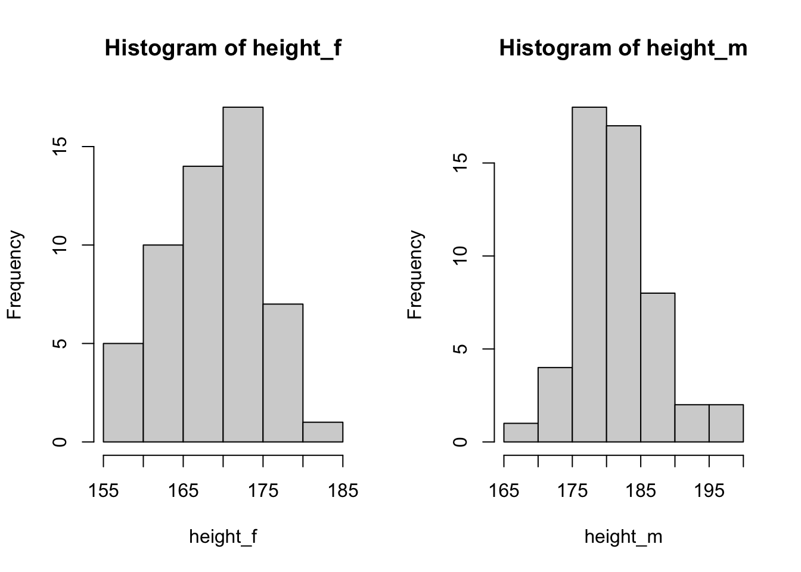
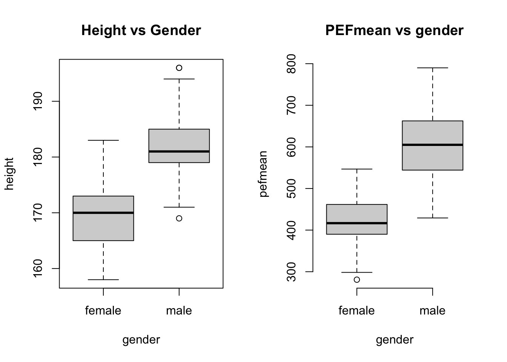
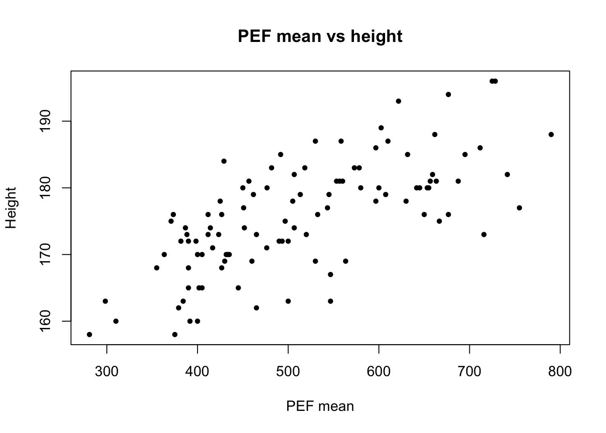
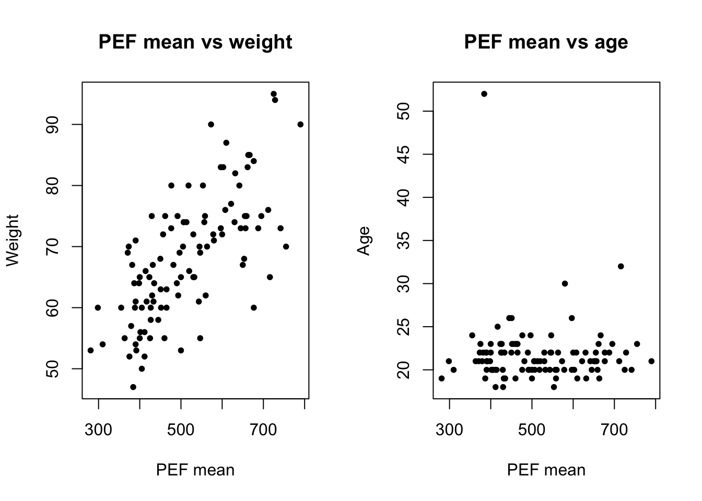

# read a csv file
penguins <- read.csv('data/penguins_complete.csv', sep = ',')Exploratory data analysis (Part I)
Exploring a dataset, descriptive statistics
Datasets
- Explore a dataset:
penguins_complete(csv link) - Exercise 1: no data, we type in data directly
- Exercise 2:
PEFH98-english(rda link, csv link)
Explore a dataset
In this section, we will introduce some frequently used commands when you first load a dataset.
We use penguins data as an example.
You can type penguins in the console to print the data; but you will see that it gets hard to read. This is usually the case: you have lots of data that is hard to fit in your screen.
Therefore, it is useful to
- print out a few rows (head of the data);
- have a list of column names
- know the dimension of the dataset (number of observations and features/measurements)
- produce some summary statistics
We extract the head (first several, by default 6) rows of your data. Similarly, you can get the last several rows using tail()
head(penguins) species island bill_length_mm bill_depth_mm flipper_length_mm body_mass_g
1 Adelie Torgersen 39.1 18.7 181 3750
2 Adelie Torgersen 39.5 17.4 186 3800
3 Adelie Torgersen 40.3 18.0 195 3250
4 Adelie Torgersen NA NA NA NA
5 Adelie Torgersen 36.7 19.3 193 3450
6 Adelie Torgersen 39.3 20.6 190 3650
sex year
1 male 2007
2 female 2007
3 female 2007
4 <NA> 2007
5 female 2007
6 male 2007# this is essentially giving the first 6 rows of your data
# penguins[1:6, ]
# head(penguins, 10) gives first 10 rows
# tail(penguins)In RStudio, you can also use View() command to look at your dataset in a tabular form.
To know what measurements (or feature, variable, parameter) are in the data, you can extract the column names.
colnames(penguins)[1] "species" "island" "bill_length_mm"
[4] "bill_depth_mm" "flipper_length_mm" "body_mass_g"
[7] "sex" "year" ncol(penguins)[1] 8To know how many subjects are in a dataset, there are a few options. You can find the dimension of the dataset; or find how many rows are in the data.
Alternatively, if you have one variable (say species), you can also use length(species).
dim(penguins)[1] 344 8nrow(penguins)[1] 344length(penguins$species) # length() gives the size of a vector[1] 344Sometimes it is also useful to know what types of data it is for each variable. You can either use str() (structure) on the dataset; or use class() on the variable you are interested in.
str(penguins)'data.frame': 344 obs. of 8 variables:
$ species : chr "Adelie" "Adelie" "Adelie" "Adelie" ...
$ island : chr "Torgersen" "Torgersen" "Torgersen" "Torgersen" ...
$ bill_length_mm : num 39.1 39.5 40.3 NA 36.7 39.3 38.9 39.2 34.1 42 ...
$ bill_depth_mm : num 18.7 17.4 18 NA 19.3 20.6 17.8 19.6 18.1 20.2 ...
$ flipper_length_mm: int 181 186 195 NA 193 190 181 195 193 190 ...
$ body_mass_g : int 3750 3800 3250 NA 3450 3650 3625 4675 3475 4250 ...
$ sex : chr "male" "female" "female" NA ...
$ year : int 2007 2007 2007 2007 2007 2007 2007 2007 2007 2007 ...class(penguins$species)[1] "character"class(penguins$bill_length_mm)[1] "numeric"Descriptive statistics
Continuous variable
A continuous variable can take values in a continuous range. Height and weight are examples of this type. Usually the data type in R is numeric; if not, you might need to convert it first.
Common summary statistics for continuous variables are
- extremes (minimum, maximum)
- average and central tendency (mean, median)
- quantiles (top 1 percent, bottom 5 percent, IQR - interquartile range)
Let us focus on one continuous variable, bill_length_mm.
# create a variable called bill
bill <- penguins$bill_length_mm
# use the command summary on a continuous variable
summary(bill) Min. 1st Qu. Median Mean 3rd Qu. Max. NA's
32.10 39.23 44.45 43.92 48.50 59.60 2 You see that there are some NA's. This means the data is missing for 2 subjects. If we do not remove them before (or tell the functions to remove it), the results will be affected.
# compute the min
min(bill)[1] NAmin(bill, na.rm = T) # remove NA[1] 32.1Now we compute the maximum, mean, median, bottom and top 5 percent quantile.
max(bill, na.rm = T)[1] 59.6mean(bill, na.rm = T) [1] 43.92193median(bill, na.rm = T)[1] 44.45quantile(bill, 0.05, na.rm = T) 5%
35.7 quantile(bill, 0.95, na.rm = T) 95%
51.995 Categorical variable
Categorical variables take discrete values, such as sex (male and female), smoking habit (frequent smoker or not), age groups.
For categorical variables, the metrics above (mean and median, max and min, quantiles) do not make much sense. We use counts and percentages instead.
We use the variable species and island from the penguin data.
species <- penguins$species
island <- penguins$island
# for one variable
table(species)species
Adelie Chinstrap Gentoo
152 68 124 # for two variables
table(species, island) island
species Biscoe Dream Torgersen
Adelie 44 56 52
Chinstrap 0 68 0
Gentoo 124 0 0# to create percentage, divide by number of subjects
table(species)/length(species)species
Adelie Chinstrap Gentoo
0.4418605 0.1976744 0.3604651 Visualization
Histogram
hist(bill)
Box plot
A boxplot gives the position of
- median (50th percentile; second quartile)
- 25th and 75th percentile (first and third quartile)
- maximum and minimum
- outliers
boxplot(bill)
# multiple boxplot together
boxplot(bill_length_mm ~ species, data = penguins)
Scatterplot of two continuous variables
plot(penguins$bill_length_mm, penguins$bill_depth_mm)
Examples (exercises with solution)
(Exercises without solution can be found here)
Exercise 1 (weight)
1a
Generate a variable named weight, with the following measurements:
50 75 70 74 95 83 65 94 66 65 65 75 84 55 73 68 72 67 53 65weight <- c(50, 75, 70, 74, 95,
83, 65, 94, 66, 65,
65, 75, 84, 55, 73,
68, 72, 67, 53, 65)1b
Make a simple descriptive analysis of the variable, what are the mean, median, maximum, minimum and quantiles?
How to interpret the data?
mean(weight)[1] 70.7median(weight)[1] 69max(weight)[1] 95min(weight)[1] 50# alternatively,
summary(weight) Min. 1st Qu. Median Mean 3rd Qu. Max.
50.0 65.0 69.0 70.7 75.0 95.0 1c
Make a histogram.
hist(weight)1d
Make a boxplot. What do the two dots on the top represent?
boxplot(weight)
They are the largest two points in the dataset. These are outliers in this data.
(Optional) Outliers in box plot
There are different ways to define outliers. The default box plot in R determines points beyond \(Q_1 - 1.5\times IQR\) and \(Q_3 + 1.5\times IQR\) are outliers. You can check the values of quartiles using summary(), and read up the documentation ?boxplot().
Exercise 2 (lung function)
Lung function has been measured on 106 medical students. Peak expiratory flow rate (PEF, measured in liters per minute) was measured three times in a sittinng position, and three times in a standing position.
The variables are
- Age (years)
- Gender (1 is female, 2 is male)
- Height (cm)
- Weight (kg)
- PEF measured three times in a sitting position (pefsit1, pefsit2, pefsit3)
- PEF measured three times in a standing position (pefsta1, pefsta2, pefsta3)
- Mean of the three measurements made in a sitting position (pefsitm)
- Mean of the three measurements made in a standing position (pefstam)
- Mean of all six PEF values (pefmean)
2a)
Download and open PEFH98-english.dta into R.
If you have problem with .dta data format, you can also use PEFH98-english.csv.
Pay attention to how gender is coded. We might have to modify it.
# locate your datafile, set the path to your data
# if you use rda data file:
# load('./lab/data/PEFH98-english.rda')
# if you use csv:
lung_data <- read.csv('data/PEFH98-english.csv', sep = ',')
head(lung_data) age gender height weight pefsit1 pefsit2 pefsit3 pefsta1 pefsta2 pefsta3
1 20 female 165 50 400 400 410 410 410 400
2 20 male 185 75 480 460 510 520 500 480
3 21 male 178 70 490 540 560 470 500 470
4 21 male 179 74 520 530 540 480 510 500
5 20 male 196 95 740 750 750 700 710 700
6 20 male 189 83 600 575 600 600 600 640
pefsitm pefstam pefmean
1 403.3333 406.6667 405.0000
2 483.3333 500.0000 491.6667
3 530.0000 480.0000 505.0000
4 530.0000 496.6667 513.3333
5 746.6667 703.3333 725.0000
6 591.6667 613.3333 602.50002b)
How many observations are there (number of subjects)? How do you get a list of variable names from your dataset?
nrow(lung_data)[1] 106colnames(lung_data) [1] "age" "gender" "height" "weight" "pefsit1" "pefsit2" "pefsit3"
[8] "pefsta1" "pefsta2" "pefsta3" "pefsitm" "pefstam" "pefmean"Make a histogram for each of the following variables. Compute means, and interpret the results.
height
weight
age
pefsitm
pefstamhist(lung_data$height)We repeat it for the other 4 variables. We can put them more compactly,
par(mfrow = c(2, 2))
# we use this line to display (2 rows 2 columns)
# by default it is 1 row 1 column
# run this line to set it back to default:
# par(mfrow = c(1, 1))
hist(lung_data$weight)
hist(lung_data$age)
hist(lung_data$pefsitm)
hist(lung_data$pefstam)2c)
Make histograms for the variables height and pefmean for men and women separately. Also try to make boxplots.
What conclusion can you draw?
height_f <- lung_data$height[lung_data$gender == 'female']
height_m <- lung_data$height[lung_data$gender == 'male']
par(mfrow = c(1,2)) # plot in parallel
hist(height_f)
hist(height_m)
# we can make it more customized
# add axis limit, title and xaxis name
par(mfrow = c(1,2)) # plot in parallel
hist(height_f, main = 'Height: female', xlab = 'Height (cm)',
xlim = c(150, 200))
hist(height_m, main = 'Height: male', xlab = 'Height (cm)',
xlim = c(150, 200))
Similarly, histogram for pefmean can be done in the same way.
pefmean_f <- lung_data$pefmean[lung_data$gender == 'female']
pefmean_m <- lung_data$pefmean[lung_data$gender == 'male']
par(mfrow = c(1,2)) # plot in parallel
hist(pefmean_f)
hist(pefmean_m)
Now we can make some boxplots
par(mfrow = c(1, 2))
boxplot(height ~ gender, data = lung_data, main = 'Height vs Gender')
# it is also possible to remove the frame
boxplot(pefmean ~ gender, data = lung_data, frame = F, main = 'PEFmean vs gender')
2d)
Make three scatterplots to compare
pefmeanwithheightpefmeanwithweightpefmeanwithage
What association do you see?
# pefmean height
plot(lung_data$pefmean, lung_data$height)# it is possible to customize
plot(lung_data$pefmean, lung_data$height,
main = 'PEF mean vs height',
xlab = 'PEF mean', ylab = 'Height',
pch = 20)
# pch: plotting symbolspch = 20 is setting the symbol to small solid dots. You can try different values, from 0 to 25. Read more
par(mfrow = c(1, 2))
# pefmean weight
plot(lung_data$pefmean, lung_data$weight,
main = 'PEF mean vs weight',
xlab = 'PEF mean', ylab = 'Weight',
pch = 20)
# pefmean age
plot(lung_data$pefmean, lung_data$age,
main = 'PEF mean vs age',
xlab = 'PEF mean', ylab = 'Age',
pch = 20)